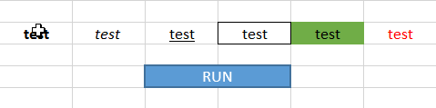

Excel: Format Cleaner Macro
TweetA simple VBA script to clean all the formatting in cells. 
Sub CleanTxt() Selection.Font.Bold = False Selection.Font.Italic = False Selection.Font.Underline = xlUnderlineStyleNone Selection.Borders(xlDiagonalDown).LineStyle = xlNone Selection.Borders(xlDiagonalUp).LineStyle = xlNone Selection.Borders(xlEdgeLeft).LineStyle = xlNone Selection.Borders(xlEdgeTop).LineStyle = xlNone Selection.Borders(xlEdgeBottom).LineStyle = xlNone Selection.Borders(xlEdgeRight).LineStyle = xlNone Selection.Borders(xlInsideVertical).LineStyle = xlNone Selection.Borders(xlInsideHorizontal).LineStyle = xlNone With Selection.Interior .Pattern = xlNone .TintAndShade = 0 .PatternTintAndShade = 0 End With With Selection.Font .ColorIndex = xlAutomatic .TintAndShade = 0 End With End Sub
Comments
Comments powered by Disqus